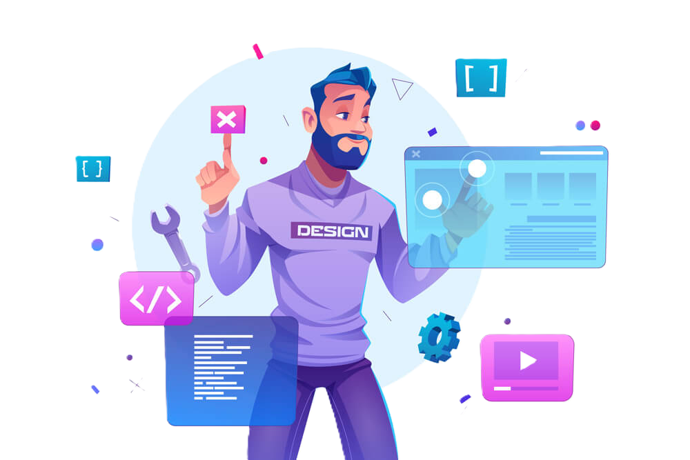

Caminhada no Deisgn Digital
O design digital aqui tem como principal objetivo introduzir, de forma prática e acessível, os fundamentos da criação visual para ambientes digitais. Nesse nível inicial, o foco não está em ferramentas complexas, mas em desenvolver o olhar criativo e a capacidade de organizar informações de maneira clara, atraente e funcional.
O curso também incentiva a criatividade e o pensamento crítico, mostrando que design não é apenas “deixar bonito”, mas sim comunicar uma mensagem com clareza e intenção. Assim, o aluno desenvolve não só habilidades técnicas, mas também uma visão mais estratégica, que pode ser útil tanto em projetos pessoais quanto em futuras oportunidades profissionais.
À medida que evoluem, alguns jovens começam a enxergar oportunidades além do ambiente escolar. Eles podem criar artes para pequenos negócios, ajudar amigos, desenvolver perfis nas redes sociais ou até iniciar trabalhos como freelancers. Mesmo que ainda estejam no início, já começam a entender noções de responsabilidade, prazos e comunicação com clientes.
Designer digital no mercado de trabalho: O designer digital é o profissional responsável por transformar ideias em comunicação visual eficiente. Ele não trabalha apenas com estética, mas com objetivo e resultado, criando peças que chamem atenção, transmitam mensagens claras e influenciem o público. Por isso, habilidades como escolha de cores, tipografia, hierarquia visual e experiência do usuário são altamente valorizadas.
O ponto-chave é que o design é uma habilidade aplicável imediatamente, o que abre portas tanto para experiência quanto para renda.

Como eu vou aprender e qual a melhor forma?
Talvez você ainda pode está se perguntando se vale a pena fazer esse curso e, se eu estiver certo, vou te explicar a forma como você vai embarcar nesse mundo novo e aprender da melhor maneira.
Você já conhece o sistema de aulas práticas e teóricas, que é a base de um aprendizado eficiente, especialmente em áreas como o design digital. Cada uma dessas abordagens tem um papel específico, e o equilíbrio entre elas é o que realmente garante que o aluno desenvolva conhecimento sólido e aplicável.
As aulas teóricas são responsáveis por construir o entendimento. É nesse momento que o aluno aprende os conceitos fundamentais, como teoria das cores, tipografia, composição visual e princípios de comunicação. A teoria explica o “porquê” das coisas: por que certas cores combinam melhor, por que um layout funciona e outro não, ou como organizar elementos para guiar a atenção do usuário. Sem essa base, o aluno até pode criar algo visualmente interessante, mas sem consistência ou intenção clara.
Já as aulas práticas são onde o aprendizado ganha vida. Nelas, o aluno aplica o que foi aprendido, criando projetos reais como posts, banners ou layouts. A prática desenvolve habilidades técnicas, melhora o domínio das ferramentas e, principalmente, ensina a resolver problemas. É nesse processo que o aluno erra, ajusta e evolui. Quando combinadas, elas permitem que o aluno não apenas saiba “fazer”, mas também entenda o que está fazendo e por quê.